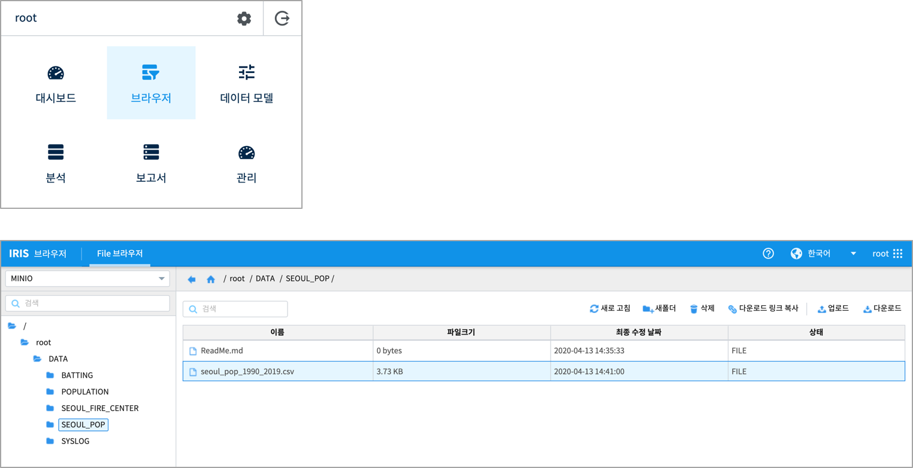

Studio : 서울시 인구 추이 보고서 만들어 보기 (1)¶
서울시 열린데이터광장에는 서울시 시정 활동 과정에서 수집된 다양한 데이터들이 공개되어 있습니다. 그 중에서 서울시 주민등록표에 등록된 인구 데이터로 서울시 인구의 추이를 챠트로 그려봅니다.
서울시 열린 데이터 광장 에서 데이터 내려 받기
데이터를 IRIS 로 업로드하기
보고서(IRIS Studio)로 챠트를 만들고 분석해보기
의 과정으로 진행합니다.
데이터 내려 받기¶
대상 데이터는 서울시 인구 추이 (주민등록인구) 통계 입니다.
서울시 인구 추이 (주민등록인구) 통계 데이터 설명 (출처 : 서울시 인구 추이 (주민등록인구) 통계)
○ 용어설명
* 등록인구 = 주민등록인구 + 등록외국인
* 주민등록인구는 "거주자", "거주불명자", "재외국민"이 포함
- 거주자: 거주지가 분명한 사람(재외국민 제외)
- 거주불명자 : 거주사실이 불분명하여 거주불명으로 등록된 사람(2010년 1월부터 통계에 포함)
- 재외국민: 외국의 영주권을 취득한(영주목적으로 외국거주 포함) 대한민국 국민으로 주민등록을 한 사람(2015년 1월부터 통계에 포함)
* 등록외국인은 출입국관리법에 의해 90일 초과 장기체류자 중에서 작성기준일 현재
외국인 등록표에 등재된 자의 집계결과로서 실제로 국내에 거주하고 있는
외국인 수와는 차이가 있을 수 있음
○ 기 타
* 1958년~1965년, 1967년은 60세이상 인구
* 출생, 사망, 전입 등의 미신고, 지연·허위신고 등에 따라 실제와는 차이가 있을 수있으며,
실제로 국내의 가족과 살고 있지 않더라도 주민등록표에 등재되어 있는 경우에는 집계되기 때문에 상주인구 기준의 조사결과와 차이가 있을 수 있음
해당 데이터의 기간을 1990년 ~ 2019년 까지 조회하여 text 로 다운로드합니다. 데이터를 다운로드 한 후, 컬럼 이름을 영문으로 재지정하고, 숫자에 표시된 콤마를 제거한 후에, 구분자를 콤마로 수정하여 csv 로 저장합니다.
데이터 형태

데이터 업로드 / 데이터 모델 생성하기¶
IRIS 에서 제공하는 기본 Object 저장소인 default-minio 로 해당 데이터 파일을 업로드합니다. 브라우저 메뉴를 클릭하여 나의 MINIO 저장소로 이동한 후, 데이터가 저장될 새 폴더를 생성하고, 파일을 업로드 합니다.
보고서 : 서울시 인구 변화 그래프 만들기¶
새 보고서 작성에 대해서는 보고서 작성 메뉴얼을 참조하세요.
서울시의 인구 변화 그래프 (1990년 ~ 2019년)
1990년 ~ 2019년 동안 서울시 등록 인구는 2010년 총 10,575,447명을 기점으로 계속 감소하는 추세임을 알 수 있습니다. 하지만 65세 이상 고령 인구는 꾸준히 증가 추세에 있습니다. 외국인은 2005 ~ 2008년 사이에 기울기가 급하게 증가하면서 급증한 것을 알 수 있습니다.